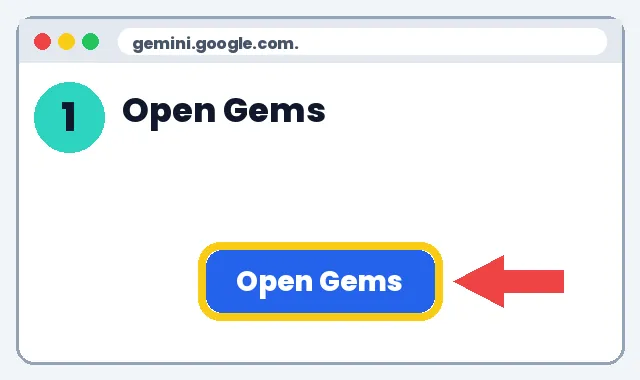
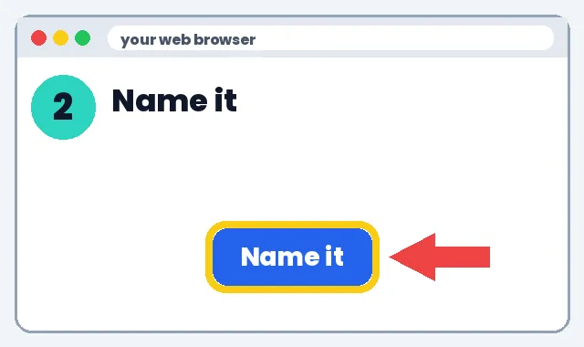
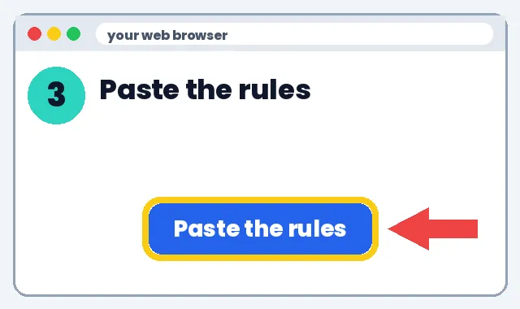
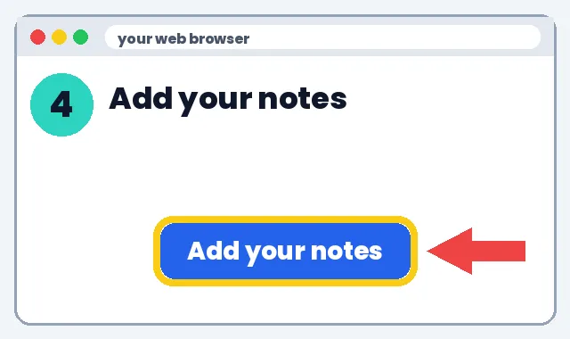
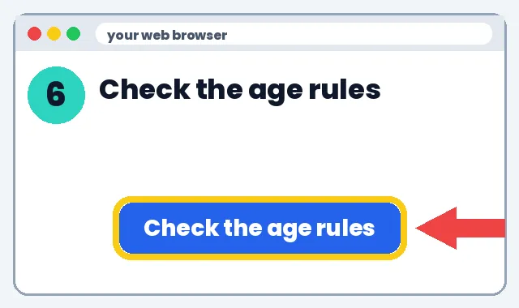

💬 How to Make a Classroom Chatbot
Make a simple class chatbot with Grok or a Grok Bot agent.
What's a chatbot? An AI helper students can type questions to. The free steps below use Google Gemini.
1️⃣ What it can do
2️⃣ How to make it
👉 Show me the steps
Go to gemini.google.com. Click Gems. Click New Gem.

Type a name. Example: Homework Coach.

Click the Instructions box. Paste this.

Click Add files. Add your class notes. No student names.

Ask 5 real homework questions. Fix the rules if it gives answers.

Gemini and ChatGPT are for 13 and up. You check the chats.

📝 Full written steps (text only)
- Name it, one job: e.g. Homework Coach.
- Write rules: “Never give the final answer. Ask one guiding question at a time. After 3 hints, ask the teacher.”
- Add a knowledge doc: Syllabus or rubric.
- Test & fix: Try 5 real questions.
- Stay safe: No student names or grades. Check age rules (ChatGPT is 13+). Teacher reviews everything.
🛡️ Safety tip: Use your own adult account. Never type a child's or student's full name, school, address, grades or photos into an AI tool. Check each tool's age rule before anyone signs up.
🤖 Set it up in Grok + 3 example instructions
With Grok
- Go to grok.com (Grok is free to start; paid plans raise limits). Source
- Open Settings and add custom instructions, so every chat follows your rules. Source
- Use Projects on grok.com in Chrome to keep a class's files and chats together. Source
- Paste one of the example instructions below and test it with 5 real questions.
- Share a conversation by public link if you want colleagues to see how it works.
Example instructions
Homework coach: "You help grade 6 students with homework. Never give the final answer. Ask one guiding question at a time. If a student is stuck after 3 hints, tell them to ask the teacher."
Reading buddy: "You talk with grade 3 readers about the book they're reading. Ask one friendly question at a time about characters and events. Keep replies under 3 sentences."
Parent-communication helper: "You help a teacher draft short, warm, clear notes to parents. Use plain words and no jargon. Never include grades, health or other private student details. The teacher always reviews before sending."
Safety notes
- Never put student names, grades or personal data into a chatbot.
- Check each tool's age rules before students use it; ChatGPT requires users to be 13+. Source
- A teacher reviews everything before it reaches students or parents.
3️⃣ What to do next
Pick one link below and try it this week. Start small: one tool, one lesson, 10 minutes.
Learn more
Grok Bot agents are an optional paid add-on; the free options above work fine for most classrooms.
📚 Classroom chatbot recipes
No tech experience needed. We'll show you every click.
Learn more
Three chatbots teachers build
1️⃣ What it can do
- Homework Hint Coach: gives hints, never answers.
- Syllabus Helper: answers parents' questions from your syllabus.
- Debate Partner: argues the other side so students practice (13+ only, school-approved).
2️⃣ How to make it
- Choose a free builder: Gemini Gems (gemini.google.com → Gems → New Gem).
- Paste one recipe below into the instructions box.
- Upload your syllabus or rubric (no student info).
- Test it with 5 tricky questions, including trying to get it to give the answer.
- Tighten the rules if it slips.
- Before students use it, confirm the tool is approved by your school and fits age rules.
3️⃣ What to do next
💰 Save money: discounts
- Apple Education pricing: Education prices on Macs and iPads
- Microsoft 365 for education: Free web Office apps with an eligible school email
- Google Workspace for Education Fundamentals: Free for qualifying schools
- Canva for Education: Free for eligible K-12 teachers
- DonorsChoose: Ask donors to fund classroom projects
See all deals for teachers & parents
Deals change, check the site. No affiliate links: we earn nothing from these.